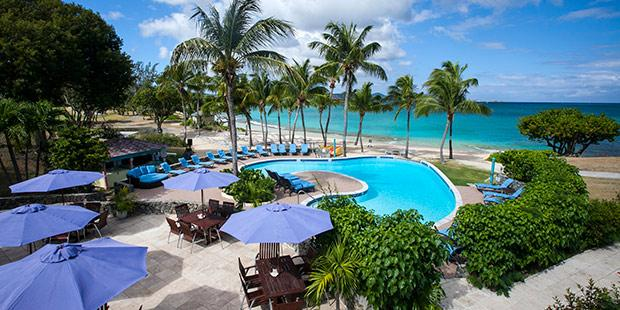

We’re in the middle of it all yet far away from your everyday life. We are a very laid-back and casual, comfortable hotel. Nothing so fancy, nothing at all pretentious. Our Staff love working here and getting to know our guests and you'll likely make fast friends here. You'll feel warm and invited, at home, relaxed, and comfortable.
The U.S. Virgin Islands are a group of Caribbean islands and islets. A U.S. territory, it's known for white-sand beaches, reefs and verdant hills. St. Thomas island is home to the capital, Charlotte Amalie. To the east is the island of St. John, most of which comprises Virgin Islands National Park. St. Croix island and its historic towns, Christiansted and Frederiksted, are to the south. The United States Virgin Islands enjoy a tropical climate, with little seasonal change throughout the year.
It is the largest and southernmost island in the Mariana Islands archipelago. Guam is a territory of the United States of America. It is considered to occupy a militarily strategic location, south of the Commonwealth of the Northern Mariana Islands. Guam is one of many islands that make up Micronesia, which politically consists of Belau (Palau), the Federated States of Micronesia (FSM), Kiribati (anthropologically having affinities with Polynesia and Micronesia), the Marshall Islands, and several remote islands designated as the US-administered islands of the Central Pacific. All of Micronesia has close political ties to the US.

The Buccaneer, St. Croix
Founded in the 17th century and family-run for generations, St. Croix's Buccaneer is the Caribbean's longest running resort. Both historic and modern, the resort blends old world charm with warm hospitality and the amenities expected by today's traveler. Featured on ABC's The Bachelor, The Buccaneer is a premier destination resort for golf, tennis, water
Top